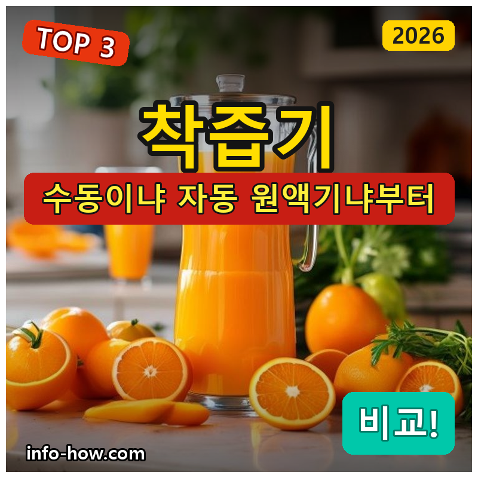
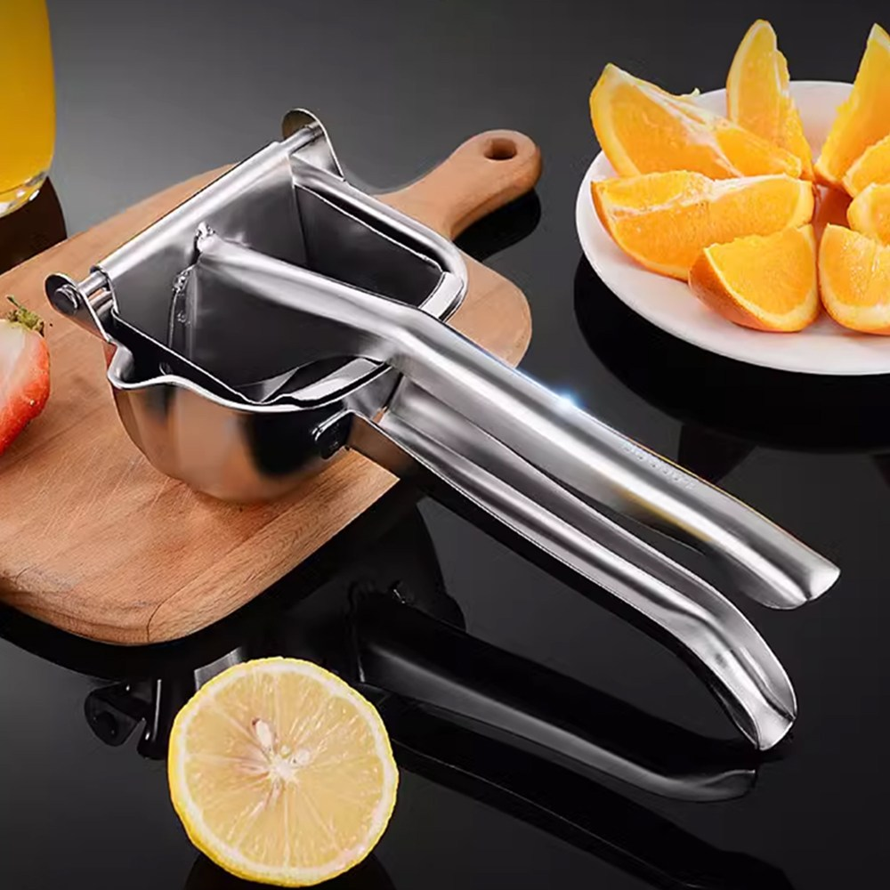
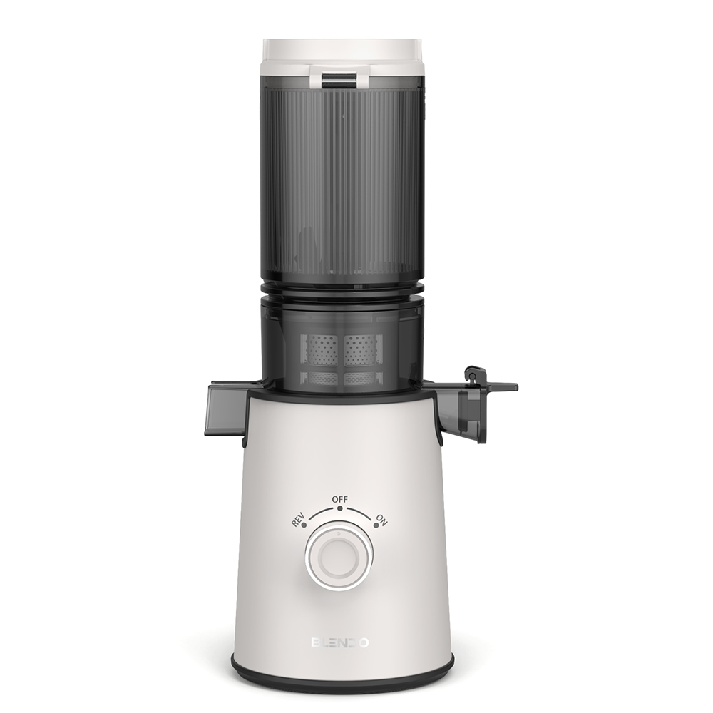
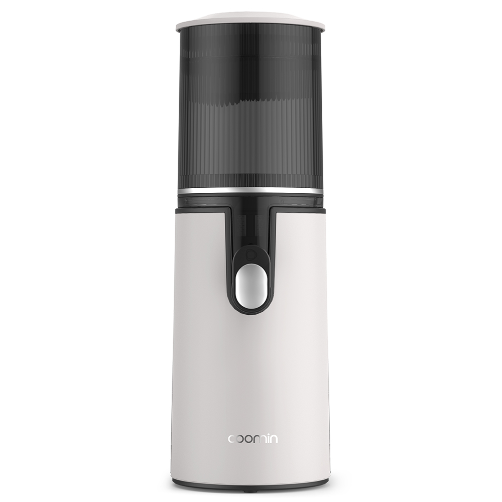

홈 › 제품리뷰 › 주방/조리
착즙기, 수동 가성비냐 자동 원액기냐
작성: 생활서식 모음 · 2026-07-27

파트너스 활동의 일환으로 일정액의 수수료를 지급받습니다
🛒 오늘의 쿠팡 특가 보러가기 →
착즙기, 홈카페·건강주스 만들려는데 뭘 살까요?
핵심은 "착즙 방식(수동/자동)과 용량, 세척" 3대 를
"레몬·오렌지 수동" "당근·사과 원액기" "대용량 자주"용도별 정답 까지 담았으니
📋 목차
착즙기, 수동 가성비냐 자동 원액기냐 — 결론 먼저 스펙 비교표: 한눈에 보기 착즙기 고를 때 봐야 할 4가지 수동이냐 자동이냐, 뭘 사야 할까? 자주 묻는 질문 (FAQ) 결론: 한 줄 요약
착즙기, 수동 가성비냐 자동 원액기냐 — 결론 먼저
착즙기는 "수동의 저렴함이냐, 자동 원액기의 편의냐" 로 갈려요.자동 원액기 가 무난합니다. 레몬·오렌지 등 가끔 짜면 수동 스퀴저로 충분하고, 자주·대용량이면 대용량 원액기입니다.
1 레몬·오렌지·가성비 (가성비 초이스)
가성비

1만원대 수동 스퀴저
1. 투데이리빙 수동 스텐 착즙기
1만원대 수동 스텐 레몬·오렌지 즙 전기 없이 간단
자동은 아니어도
추천 대상
레몬·오렌지 등 감귤류를 가끔 짜는 분 전기 없이 간단히 쓰려는 분 저렴하게 착즙을 시작할 분 장점
1만원대로 부담 없이 수동 착즙기를 마련 스테인리스라 위생·내구에 유리 전기 없이 눌러 짜 세척이 간단 단점
당근·야채 등 단단한 재료·대량 착즙은 자동이 낫다 이 제품은 감귤류·수동용 입니다. 당근·사과 자동이면 2번 원액기, 자주·대용량이면 3번으로 가세요. "레몬·오렌지 가끔"이면 가성비 최고예요.
한줄 리뷰
"레몬청·오렌지주스 가끔"이면 수동 스퀴저로 충분합니다. 세척도 간단해요. 당근·야채·대량이면 2·3번을 보세요.
주요 스펙
제품: 투데이리빙 수동 스텐 착즙기(스퀴저) 방식: 수동(눌러 짜기) 용도: 레몬·오렌지 등 감귤류 배송: 로켓배송 가격: 약 12,810원 (변동 가능) ※ 실제 스펙·가격과 차이가 있을 수 있습니다
2 당근·사과·자동 (베스트 초이스)
베스트

자동 원액기
2. BLENDO 자동 착즙 원액기
자동 압착 원액기 당근·사과·야채 녹즙 즙 많이·편의
당근·사과도 자동으로 압착
추천 대상
당근·사과·야채 녹즙을 자주 만드는 분 수동이 팔 아파 자동을 원하는 분 즙을 많이 짜고 싶은 분 장점
자동 압착이라 당근·사과 등 단단한 재료도 착즙 저속 압착 방식이면 즙이 많이 나오는 편 수동보다 편하고 대량 착즙에 유리 단점
부품이 많아 세척이 다소 번거롭고 가격이 있음 감귤류·수동이면 1번, 자주·대용량이면 3번입니다. 2번은 "자동 원액기" 의 실속 구간 — 당근·사과 녹즙에 무난합니다.
한줄 리뷰
"당근·사과 녹즙을 자주, 편하게"면 자동 원액기가 좋습니다. 즙도 많이 나오고요. 세척 편의·대용량이면 세척 쉬운 제품·3번을 보세요.
주요 스펙
제품: BLENDO 자동 착즙 원액기 방식: 자동 압착(원액기) 용도: 당근·사과·야채 녹즙 배송: 로켓배송 가격: 약 77,440원 (변동 가능) ※ 실제 스펙·가격과 차이가 있을 수 있습니다
3 자주·대용량 (프리미엄)
프리미엄

대용량 자동 원액기
3. coomin 대용량 자동 착즙 원액기
대용량 자동 착즙 당근·생강·사과 등 자주 많이 만들기
자주·많이 만드는 가족·건강주스
추천 대상
가족·건강주스를 자주 많이 만드는 분 한 번에 많은 양을 착즙하려는 분 다양한 재료(당근·생강 등)를 쓰는 분 장점
대용량이라 한 번에 많은 양을 착즙해 자주 만들기 좋음 당근·생강·사과 등 다양한 재료에 대응 자동이라 힘 안 들이고 편하게 착즙 단점
가격이 있고, 부품 세척이 필요하며 자리를 차지 감귤류·수동이면 1번, 가정용 자동이면 2번이 합리적입니다. 3번은 자주·대용량으로 많이 만드는 분에게 값어치가 있습니다.
한줄 리뷰
"가족이 매일 건강주스, 많이"면 대용량 원액기가 편합니다. 한 번에 많이 짜요. 가끔·가성비면 1·2번이 합리적입니다.
주요 스펙
제품: coomin 대용량 자동 착즙 원액기 방식: 자동 압착 · 대용량 용도: 자주·많은 양 녹즙 배송: 로켓배송 가격: 약 126,400원 (변동 가능) ※ 실제 스펙·가격과 차이가 있을 수 있습니다
스펙 비교표: 한눈에 보기
가격·풍량·무게 중 본인에게 중요한 기준부터 보세요. "최고" 표시는 3제품 중 객관적 1위 값입니다.
← 좌우로 스크롤 →
착즙기 고를 때 봐야 할 4가지
방식·세척만 챙겨도 "팔 아픔·세척 지옥" 실패를 막습니다.
1) 방식 — 수동 vs 자동(원액기)
수동 스퀴저: 레몬·오렌지 등 감귤류, 저렴·간단자동 원액기: 당근·사과·야채 등 단단한 재료·대량저속 압착식이면 즙이 많이 나오는 편 2) 재료 — 감귤류? 야채·당근까지?
감귤류만이면 수동 스퀴저로 충분 당근·사과·잎채소 녹즙이면 자동 원액기 다양한 재료를 쓰면 대응 범위를 확인 3) 세척 편의 — 자주 쓰려면
자동 원액기는 부품이 많아 세척이 관건 분리·세척이 쉬운 구조라야 꾸준히 쓰게 됨 세척 편의(전용 솔·식기세척기) 확인 4) 용량·소음 — 만드는 양·환경
자주·많이 만들면 대용량이 유리 자동은 작동 소음이 있으니 시간대 고려 착즙량(수율)·찌꺼기 처리도 참고 수동이냐 자동이냐, 뭘 사야 할까?
재료와 빈도만 정하면 답이 나옵니다.
감귤류·가끔: 1번 수동 스퀴저 → 1만원대당근·사과 자동: 2번 BLENDO 원액기 → 편의자주·대용량: 3번 coomin 대용량 → 많이자주 묻는 질문 (FAQ)
Q1. 수동 착즙기랑 자동 원액기, 뭐가 나은가요? 재료와 빈도로 갈립니다. 수동 스퀴저는 레몬·오렌지 등 감귤류를 가끔 짤 때 저렴하고 세척이 간단해 좋습니다. 자동 원액기는 당근·사과·잎채소처럼 단단하거나 즙이 적은 재료를 착즙하거나 많은 양을 만들 때 편합니다. 감귤류만 가끔이면 수동, 다양한 재료·대량이면 자동을 고르세요.
Q2. 착즙기랑 믹서기(블렌더)는 다른가요? 결과물이 다릅니다. 믹서기는 재료를 통째로 갈아 섬유질까지 포함된 걸쭉한 스무디를 만들고, 착즙기(원액기)는 즙만 짜내 맑은 주스·원액을 만듭니다. 섬유질까지 먹으려면 믹서기, 맑은 즙·원액을 원하면 착즙기가 맞습니다. 목적(스무디 vs 주스)에 따라 고르고, 둘 다 필요하면 각각 두기도 합니다.
Q3. 착즙기 세척이 번거롭다는데 정말 그런가요? 자동 원액기는 부품이 많아 세척에 시간이 듭니다. 압착 스크루·거름망 등 부품을 분리해 씻어야 하는데, 거름망에 찌꺼기가 끼면 세척이 번거롭습니다. 다만 분리·세척이 쉽게 설계된 제품이나 전용 세척 솔이 있으면 한결 편합니다. 세척이 귀찮으면 결국 안 쓰게 되니, 세척 편의 관련 후기를 확인하는 것이 좋습니다. 수동 스퀴저는 세척이 간단합니다.
Q4. 저속 착즙(원액기)이 즙이 더 많이 나오나요? 일반적으로 저속 압착 방식이 즙 수율이 좋은 편입니다. 저속으로 천천히 눌러 짜는 원액기는 재료를 으깨어 즙을 많이 뽑아내고 열 발생이 적어 영양 파괴가 덜하다고 알려져 있습니다. 고속 회전식보다 즙이 많이 나오고 찌꺼기가 건조하게 나오는 경향이 있습니다. 즙을 알뜰히 짜고 싶으면 저속 압착식 원액기를 고려하세요.
Q5. 당근·생강 같은 단단한 재료도 착즙되나요? 자동 원액기라면 대부분 가능하지만 제품 사양을 확인하세요. 당근·생강·비트처럼 단단한 재료는 수동 스퀴저로는 어렵고 자동 원액기라야 착즙됩니다. 다만 제품마다 처리 가능한 재료·투입구 크기가 다르니, 단단한 재료를 자주 쓸 계획이면 해당 재료 착즙이 명시된 제품을 고르세요. 너무 큰 재료는 적당히 잘라 넣어야 무리가 없습니다.
결론: 한 줄 요약
1) 수동 스텐 스퀴저 — 약 12,810원 / 감귤류·가성비. 1만원대, 레몬·오렌지.2) BLENDO 자동 원액기 — 약 77,440원 / 당근·사과·자동. 단단한 재료도.3) coomin 대용량 원액기 — 약 126,400원 / 자주·대용량. 많은 양 녹즙.이 포스팅은 쿠팡 파트너스 활동의 일환으로, 이에 따른 일정액의 수수료를 제공받습니다.